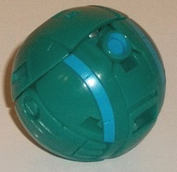
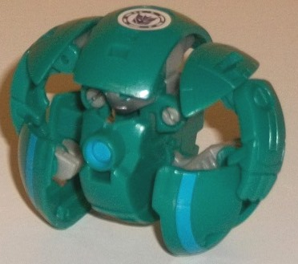
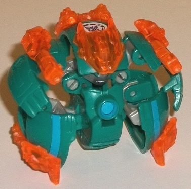
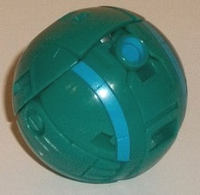
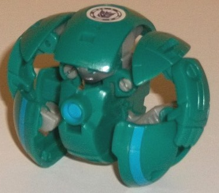
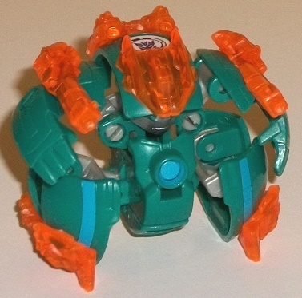
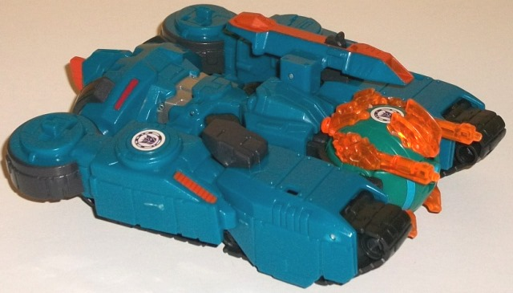
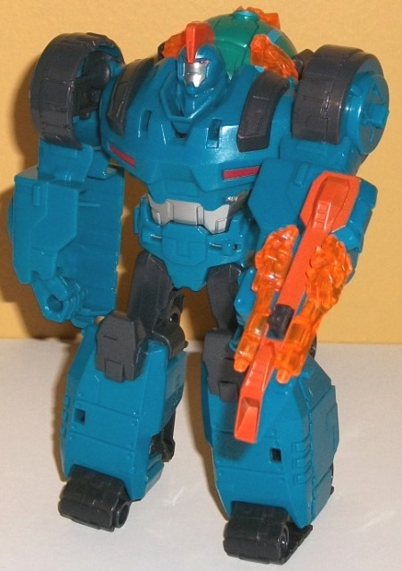

  
Size : Mini-Con
Difficulty of Transformation : Very Easy
Color Scheme : Moderately dark bluish green, trnasparent orange, and some light milky gray, silver, light pale red, and moderately light blue
Individual Rating : 3.7
Allegiances
: Decepticon
 Backtrack
Backtrack



Size
: Mini-Con
Difficulty of Transformation
: Very
Easy
Color Scheme
: Moderately dark bluish
green, trnasparent orange, and some light milky gray, silver, light pale
red, and moderately light blue
Individual Rating
: 3.7
Backtrack's the first
of the "ball" Mini-Cons, which tend to mostly be bad guys but are occasionally
Autobots as well. Anyways, in ball mode Backtrack looks... well, like a
pretty darned perfect ball. Perfectly spherical with the only robot extras
being that the fingers are a little obvious on the sides, but that's a
pretty minor downside given they fit the overall shape of the figure and
don't stick out shape-wise at all. The mold detailing is fairly smooth
as you'd expect for a sphere, though there's some decorative circular lines
around it, a few other minor line details, and a pretty cool circular detail
on the front that in the show functions as a little blaster. The only paint
in this mode is a moderately light blue used on that front blaster as well
as part of the circular details-- but only the front bottom quarter of
them, unfortunately, which is kind of a bit weird. Either paint the whole
circular detail or don't, if you ask me. The only visible plastic color
in this mode is a rather nice, somewhat dark bluish green. The blue paint
of course complements it while also being lighter, but it's not quite lighter
enough
--
I think making the blue lighter would've added more contrast and made the
paint apps stick out a bit more.
To transform Backtrack
to robot mode, you take the top half of the ball and move it up a bit,
and the rest auto-transforms. The end result is.... eeesh. Well, the focus
on this toy was definitely on the ball mode, let's say that. The feet aren't
really feet but semicircular... wheel?... things. If they were full smaller
wheels that would make sense, but I'm not sure exactly how these weird-looking
"feet" are supposed to function; they seem to just be parts of a sphere
with no real thought as to how they would look as legs. The arms and shoulders
are pretty proportional and look nice, though unfortunately the shoulders
can't "level" out enough and always angle in towards the head, and although
the arms can move forward at the top, the legs often get in the way. The
head is sculpted on the underside of the top portion of the ball, and it
has fairly human-esque features, with normal eyes and a mouth. The face
is painted silver, along with red eyes, giving Backtrack his additional
paint apps for robot mode. The sides of the face are a bit "long" to make
him look a bit more alien, but I like it; the head looks pretty good. It
doesn't "come up" enough from the main body, though, which makes it too
difficult to see, unfortunately-- overall this toy definitely needed to
"unfold" more in this mode. He's also got another color of plastic used
for some of his interior connector pieces, but it's... ugh... light milky
gray. It provides some contrast to the bluish green, certainly, but man
is it bland. Beyond the aforementioned forward movement at the arms, the
shoulders can also angle up and down a little bit, but any other movement
causes Backtrack to start to compress back into his ball mode-- which unfortunately
is VERY easy to do, and is quite annoying. There needed to be some kind
of soft "catch" to hold him in this mode. Backtrack's armor bits are a
nice orange, which really pop against the blue-green-- once again, the
armor pieces really help the overall color scheme. As for said armor bits,
he's got an angular helmet that pegs in above his head; two long gun pieces
with fiery detailing that peg in on his shoulders; more little bits of
fiery-detailed armor that peg into the front and back of each foot, effectively
stabilizing him; and a piece that pegs into his upper back that has jetpack-like
detailing near the rear end. Overall he definitely looks more "battle ready"
with these pieces on, and thankfully they all can stay on in ball mode,
as well.
 Overload
Overload


Size
: Mini-Con Deployer
Difficulty of Transformation
: Easy
Color Scheme
: Semi-metallic moderately
dark teal, charcoal black, and some silver, moderately dark pale red, and
moderately dark orange
Individual Rating
: 6.5
Overload's alternate
mode is a futuristic tank, and this is one of those cases where "futuristic"
means "kinda lazy". It's pretty obvious where everything in his robot mode
is here; the arms at the sides, the legs on the front of the sides, the
main body near the back. It's really hard to see this as anything else
but Overload laying down, quite honestly. It doesn't have the right proportions
for a tank, with pretty big obvious "holes" in the main body of the tank
in between the robot main body and the robot arms; the gun is VERY off-center;
and there's no real back end, just a cover pulled up over the robot head
and those weird sideways tires. The only thing that is very solidly "tank"
about this mode are the treads on the sides, which go all the way back
and are very intricate in terms of mold detailing, with the wheels and
treads quite well-done. In fact, overall Overload excels in this realm,
with armor plating, "bolts", circular "hatch"-like details, and the usual
RID2015 trio of divots here and there, like on the sides of the legs. There's
also a cockpit molded into this mode right behind the ball launcher, though
unfortunately it has no paint detailing to make it stand out. Speaking
of the ball launcher, it's in a pretty good position right in the middie
of the front of this mode-- no odd "side car" for this deployer! Pressing
in on the little tab on the gun and on the small wheel on the bottom of
the launcher at the same time will cause the launcher to activate, and
it's fairly strong, so no issues there. Overload's color scheme is mostly
a fairly dark teal, which is spiced up a bit by having a fair amount of
glitter in the mix, making it semi-metallic. The other main color is a
charcoal shade of black, used mostly for the treads, knees, upper legs,
and launcher. As with most uses of this shade, I think a more "pure" black
would have looked better, but it still contrasts against the teal decently
well. My main issue with the color scheme is there isn't enough of the
other colors on Overload; there's some orange on the top of the main gun,
a bit on the side vents, some silver on what becomes the robot abs, and
some headlight-like red details on the robot chest, along with some more
charcoal black paint details. The orange and red help brighten up the areas
where they're used, so these colors really should've been used more, as
some areas-- the sides in particular-- are rather dull without some paint
to bring out all that mold detailing. One last thing worth noting-- the
two transparent orange "gun" armor pieces from Backtrack can be plugged
into the sides of the main gun in this mode, to give it a bit more firepower.
The transformation to
Overload's robot mode is pretty straightforward for the most part; the
"order of operations" and where the treads tab in on the back are the only
parts that you may need to look at the instructions briefly to figure out.
The end result is a robot mode that is definitely by far the focus of this
toy; the proportions are incredibly solid, making Overload a fairly bulky
bot. Because so much is brought over from the tank mode, there isn't a
whole lot to say about this mode in terms of detailing. The guard over
the robot head slides down into the chest pretty easily, leaving no trace--
the headsculpt is very solid. He's got a fairly round head with a normal
silver face and eyes, but an orange mohawk, which I love and which gives
him a ton of character (that is directly opposite to the opera-singer persona
he had on the show). The hover-wheels make for great circular shoulders,
and although the hands are merely molded into the "chunks" of the lower
arms, they're molded in pretty well, with even the little mid-finger joints
molded there (though his hands can't move at all, natch). The treads fold
up quite nicely to make his toes and the back of his legs, and the way
they fold back there help to stablize him more by acting as elongated heels.
His tank gun is permanently attached to his left arm and gives him a bit
of weaponry. You're either going to love or hate where the ball launcher
is in this mode-- it's behind his back, stored away and un-fireable in
this mode. Personally I like that because making the launcher a central
part of his tank mode gives it more of a purpose and I don't like how much
the launchers hung off
Drift
and
Fracture
,
but if you want to be able to launch Mini-Cons in robot mode easily, that
ain't gonna happen. As is unfortunately the case with Mini-Con Deployers,
Overload doesn't have much articulation; he can move at the shoulders (at
two points), side-to-side at the hips, and that's it. Not even any front-to-back
movement at the legs...
The Mini-Con Deployer
Overload w/ Backtrack set is a mixed set; both of the toys have one great
mode and one awful mode. Backtrack's ball mode is very nice, but his robot
mode is a mess (particularly the legs) and collapses back into ball mode
far too easily (the armor bits are awesome, though). Overload's robot mode
is similarly great-looking (though he can't move much), but the tank mode
is very lazy and not much more than him on his back with the ball launcher
swung forward. If you want a ball-launcher deployer, I'd recommend Crazybolt
much, MUCH more than this guy.
Reviews by Beastbot